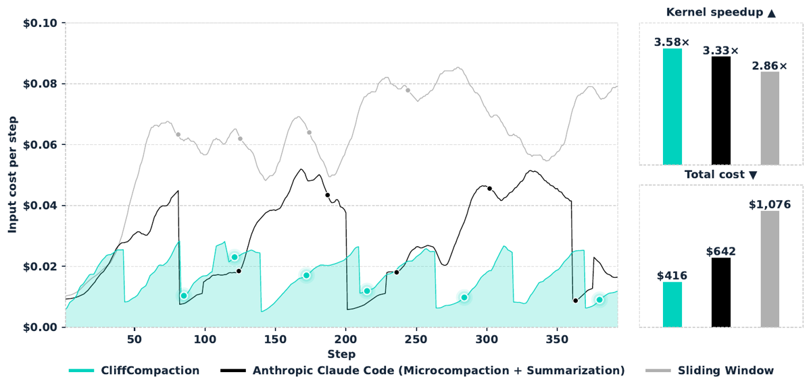
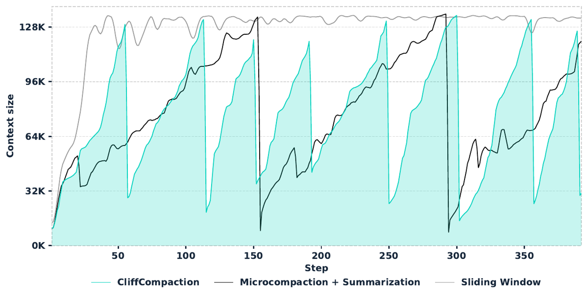
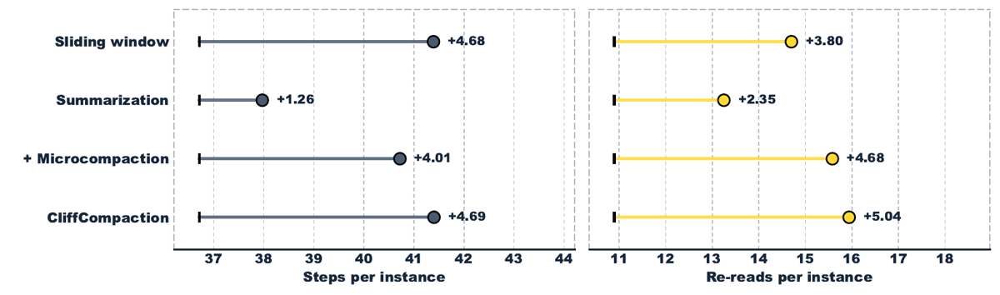

TL;DR — Règle de compaction purement déterministe et sans appel LLM : laisser le contexte croître jusqu'à un seuil B, puis le remplacer par [system, tâche, bloc compacté, K dernières paires de tours], où le bloc compacté ne contient que du verbatim tronqué (signature de tool call à 150 caractères, thinking à 300, tool results ≤ 500 caractères conservés tels quels, > 500 caractères supprimés) — et, à chaque nouvelle compaction, jeter intégralement la compaction précédente au lieu de l'imbriquer [§2, Alg. 1].
Claim principal, formulé précisément : à modèle, scaffold et budget de contexte identiques, cette règle (i) réduit le coût de 21 à 64 % selon configuration, et (ii) maintient ou améliore le taux de résolution par rapport au plein contexte et aux compacteurs natifs des scaffolds — parce que l'essentiel du coût d'un agent long est en lectures de KV-cache (78 % de la facture non compactée [Tab. 7]) et que CliffCompaction est la seule stratégie qui n'invalide le cache qu'à de rares points de rupture.
Thèse de fidélité revendiquée : la « compaction precision » (ne pas déformer ce qu'on garde) est obtenue par construction — on ne reformule jamais, on tronque — et le « compaction recall » est sacrifié délibérément [§2, Tab. 1]. ⚠️ Cette thèse n'est jamais mesurée ; voir §3 et la mission (b).
Pourquoi ce papier compte pour ce corpus : c'est le papier de compaction qui comporte la baseline de troncature triviale que le reste du corpus réclame (sliding window + microcompaction type clear_tool_uses d'Anthropic, à budget de contexte apparié [Tab. 6]) — et le résultat de cette baseline est, pour la thèse qualité, embarrassant. Et c'est le seul du corpus qui décompose la facture par composant de contexte et par statut de cache [Tab. 7, Tab. 8].
Aucune donnée d'entraînement de politique, aucun RL, aucun SFT. Le papier est une technique d'inférence évaluée sur quatre benchmarks tiers. Les lignes de la grille sont donc en large partie inapplicables — et c'est en soi l'information principale pour un lecteur qui construit un env RL.
| Benchmark | Taille | Scaffold(s) | Vérifieur |
|---|---|---|---|
| SWE-bench Verified [§3.1] | 500 instances | mini-swe-agent (historique append-only, « a clean baseline »), OpenHands (condenser natif remplacé) |
suite de tests exécutée |
| Terminal-Bench 2.0 | 89 tâches [App. F.1] | Terminus-2 standard, compaction native substituée |
tests de la tâche |
| Terminal-Bench 2.1 | non précisé | Claude Code (closed-source) via proxy d'API |
tests de la tâche |
| KernelBench Level 3 [§5.1] | 50 tâches | OpenHands |
compilation + correction numérique + chronométrage |
Filtrage, curriculum, distribution de difficulté : aucun. Les benchmarks sont pris tels quels.
Contamination / séparation train-test : non traitée, et non traitable — tous les modèles évalués sont des modèles propriétaires ou semi-ouverts de données d'entraînement inconnues, sur des benchmarks publics. ⚠️ Atténuation standard : la contamination frappe identiquement tous les bras (même modèle gelé dans chaque colonne), donc elle ne menace pas les comparaisons relatives, uniquement les niveaux absolus et les comparaisons au leaderboard propriétaire.
Le seul objet appris : SGV (Soft Group Verification) [§4.1, App. F.1] — classifieur LightGBM binaire qui prédit, par trajectoire candidate, la probabilité de résoudre la tâche, pour la sélection en test-time scaling parallèle.
- Features : 30 dimensions, recopiées intégralement [Tab. 14 Terminal-Bench, Tab. 15 SWE-bench]. Trois familles : execution behavior (marked_complete, n_episodes, n_tool_calls, et leurs variantes normalisées intra-groupe Δμ et /max), produced solution (longueur, indentation, densité de ponctuation, comptages de mots-clés if/while/print/shebang, nombre de fichiers, identifiants distincts), et within-group agreement (overlap_min, symbol_overlap_sum, symbol_jaccard_sum/max, et sur SWE-bench group_consensus_level, group_has_exact_duplicates, hunk_jaccard_sum).
- Hyperparamètres (recopiés, identiques sur les deux benchmarks) : 800 boosting rounds, LR 0,03, 63 leaves, min 15 samples/leaf, régularisation ℓ2 = 1,0 ; un classifieur séparé par budget de rollouts k.
- Anti-fuite : entraîné sur les rollouts d'un autre modèle (sélecteur appliqué à Kimi K2.6 entraîné uniquement sur GLM 5.1, et réciproquement) ; validation croisée au niveau instance, 5 folds [Tab. 16] ; efficacité en données testée de 25 % à 100 % des tâches [Tab. 17], résolution « essentiellement inchangée ».
- ⚠️ Le §4.1 annonce « We additional test for test leakage and find SGV to not leak any information through summary statistics of the trajectory. Details are in Appendix F.1 » — et l'App. F.1 ne contient aucun test de fuite : on y trouve le cross-model, la CV instance-level et l'efficacité en données, pas un test de fuite. Claim introuvable tel qu'énoncé (voir 7.0).
- ⚠️ Problème non discuté : n_episodes et n_tool_calls sont des features de SGV, et la compaction modifie ces features (+ de 4 étapes par instance [Fig. 6]). Rien n'indique si le sélecteur appliqué aux bras compactés a été entraîné sur des rollouts compactés ou plein-contexte. Un sélecteur qui aurait appris « moins d'étapes = mieux » se comporterait différemment selon le bras.
Coût humain : nul. Aucune annotation, aucun expert. Le coût est en API et en GPU (voir §6).
C'est ici qu'est la contribution. Le papier ne construit pas d'environnement : il construit une couche de gestion de contexte insérée dans quatre harnesses existants.
CliffCompaction(turns):
old, recent <- turns[:-2K], turns[-2K:] # K paires de tours gardées intactes
pour m dans old :
si m est une compaction antérieure -> SKIP (« discard, keep flat »)
sinon si m est Assistant -> garder [Truncate(m.thinking, 300), Signature(m.toolcall, 150)]
sinon si m est ToolResult et |m|<=500 -> garder m intégralement
(sinon : supprimé)
retourner Join(parts), recent
Query(messages):
essayer LLM(messages)
sauf ContextWindowExceeded :
s, x <- messages[0], messages[1] # system prompt + description de tâche, en entier
C, recent <- CliffCompaction(messages[2:])
retourner LLM([s, x, C] || recent)
S_t = C_{t-1} ⊕ L_t, C_t = CliffCompaction(L_t), S_{t+1} = C_t ⊕ L_{t+1}, avec C_0 = ∅. C_{t-1} est jeté, jamais imbriqué dans C_t [§2.3]. Conséquence : au-delà de deux fenêtres de compaction, aucune information n'est portée directement.L_t a été généré avec C_{t-1} en vue, donc C_t porte une influence implicite du contexte jeté, en chaîne jusqu'à L_1. ⚠️ Hypothèse non testée : aucune expérience n'isole cette propagation résiduelle (pas de bras « compaction qui jette tout sans résidu », pas de sonde de rétention). C'est le pilier explicatif du papier, et il repose sur zéro mesure.B ∈ {45K, 32K, 16K, 8K} (et 128K/200K/256K sur KernelBench) ; l'Alg. 1 ne décrit qu'un déclenchement paresseux sur exception ContextWindowExceeded. Les deux coexistent sans être réconciliés.K n'est jamais chiffré. C'est l'hyperparamètre qui détermine combien de contexte verbatim survit à une compaction, et sa valeur est non précisée dans tout le papier (vérifié par grep : K n'apparaît que comme symbole, §2.2 et Alg. 1). Les seuils 500 / 150 / 300 caractères sont donnés, K non.Décomposition du contexte sur Terminal-Bench 2.0 / GLM 5.1, sans compaction : tool results 56,0 %, tool calls 28,0 % (= 84 % à eux deux), thoughts 13,6 %, system + tâche 2,4 %. D'où la règle : jeter les longs tool results, réduire les tool calls à leur signature. Justification de récupérabilité des auteurs : la signature du tool call est préservée verbatim, donc l'agent peut réémettre le même appel pour retrouver l'information ; un fichier écrit persiste dans le workspace. L'environnement sert de mémoire externe implicite.
[terminal] {command} (≤ 120 car.) · [file_editor view] {path} range={range} · [file_editor create] {path} ({N} chars) · [file_editor str_replace] {path} (old: {old_str}...) (old_str ≤ 60 car.) · [file_editor insert] {path}:{line} · [file_editor undo_edit] {path} · [think] {thought} · [finish] · task_tracker → supprimé.
Sur mini-swe-agent et Terminus-2 : 150 premiers caractères de la commande bash / des keystrokes parsés [App. C] — « the command itself typically appears at the start of the string, while the remainder often consists of lengthy inline file contents ».
Toute modification de contexte invalide le KV-cache et force un re-prefill ; les tokens d'entrée non cachés coûtent 5 à 6× les tokens cachés sur les modèles étudiés [Tab. 9 : p. ex. Kimi K2.6 $0,95 vs $0,16 / M tokens]. CliffCompaction ne touche jamais au contexte entre deux compactions → cache valide sur tout un segment de croissance, invalidé uniquement aux ruptures. C'est la raison pour laquelle sliding window est plus cher que le plein contexte (+9 % / +7 % [Tab. 6]) : il déplace le préfixe à presque chaque étape.
⚠️ La compaction casse la trajectoire, de la pire manière possible pour du RL. À chaque cliff, le contexte est reconstruit en [system, tâche, C_t, K derniers tours] : la séquence vue à l'étape t+1 n'est pas un préfixe de celle vue à l'étape t. Sliding window et microcompaction le font aussi, mais CliffCompaction reconstruit davantage (il jette aussi C_{t-1}). La Fig. 5 (context_overlay) montre les trois profils : cliff propre pour CliffCompaction, plafond plat pour sliding window, dents de scie permanentes pour microcompaction + summarization. Le papier ne fait aucun RL et ne discute donc jamais cette conséquence — voir mission (c).
Absent. Aucune trace de trajectoire, aucun exemple de bloc compacté, aucun prompt de compaction (il n'y en a pas — la méthode est purement rule-based, c'est cohérent). Le dépôt propose un mode cliff run --shadow (« observe-only: logs what it would compact, changes nothing ») — utilisable pour auditer les suppressions sans modifier le comportement.
Deux objets à distinguer, et le papier n'a de vérifieur que pour l'un.
atol = rtol = 1e-2 (CUDA, aligné sur dai2026cuda) ou 5e-2 (Triton, aligné sur du2026adaexplore) ; si correct, 10 runs chronométrés après 10 warmups contre PyTorch Eager. Par problème : meilleur speedup sur toutes les étapes, clampé à 10× ; aucun kernel correct ⇒ pénalisé à 0,1. Métrique rapportée = moyenne géométrique sur les 50 tâches. L'agent est en outre interdit de retomber sur les opérateurs de compute PyTorch en configuration CUDA, et sa capacité d'auto-terminaison a été retirée (budget fixe d'étapes).atol=1e-2 est un vérifieur faible — un kernel numériquement douteux peut passer ; le papier hérite ce protocole des baselines pour l'appariement, choix défendable, mais le vérifieur n'a pas été attaqué (pas de test contre des kernels dégénérés, pas de mutants).C'est le point central de la mission (b), et la réponse est nette.
len > 500 → supprimé, signature à 150 caractères, thinking à 300, K dernières paires intactes [Alg. 1]. Aucun classifieur, aucun modèle, aucun LLM n'est consulté. → Le papier échappe structurellement à la circularité de 2608.22752 (où la vérité terrain d'épinglage est produite par le classifieur qui décide de l'épinglage) : il n'y a pas de classifieur à rendre circulaire.Aucune. Pas de RL, pas de SFT, pas de fine-tuning, pas de gradient. La méthode est training-free et c'est revendiqué comme une propriété de design [Tab. 1, colonne « Training-free »]. Le seul « entraînement » est le LightGBM de SGV, dont les hyperparamètres sont complets (§1 ci-dessus).
Conséquences pour cette section de la grille : KL, groupe, advantage, clipping, on/off-policy, LR, steps, température de rollout — tous non applicables. La température d'échantillonnage des modèles évalués est d'ailleurs elle aussi non précisée (⚠️ omission réelle : les écarts-types inter-seeds rapportés dépendent du réglage d'échantillonnage, et on ne sait pas lequel).
Limitations auto-déclarées [§8, recopiées en substance] : (i) le bénéfice dépend du scaffold et de la tâche — les économies croissent avec la complexité du scaffold, mais le budget minimal viable aussi (system prompt + définitions d'outils consomment le budget avant la première action) ; (ii) bénéfice « meaningful only for medium-to-long-horizon tasks » ; (iii) la comparaison est limitée aux méthodes agissant sur l'historique de conversation à l'inférence — pas de comparaison aux méthodes qui entraînent le modèle à gérer son contexte, ni aux mémoires externes, « we did not have the resources ». ⚠️ Cette troisième limitation est exactement la frontière qui compte pour un env RL : le papier exclut explicitement la famille RL de son périmètre de comparaison.
Le papier ne contient aucune section de failure modes et ne discute aucun reward hacking. Est-ce crédible vu le reward ? Oui, en grande partie : il n'y a pas de politique entraînée, donc rien n'apprend à exploiter quoi que ce soit, et les vérifieurs sont exécutionnels.
Les modes de défaillance réellement présents dans le papier, que j'extrais des résultats :
| Comportement | Détection | Correction | Évaluée ? |
|---|---|---|---|
| Épuisement de contexte avant le budget d'étapes : sans compaction, 98 % des runs sur L40S et 76 % sur RTX Pro 6000 terminent tôt, à une médiane de 99 et 122 étapes sur un budget de 200 [§5.2] | compté explicitement | c'est la raison d'être de la méthode | oui — mais ⚠️ cela rend la comparaison non appariée en étapes (voir 7.0 et mission (a)) |
Re-prefill qui annule les économies : à 8K, Kimi K2.6 sur mini-swe-agent est marginalement plus cher que le plein contexte (+1 %) [Tab. 8] ; sur Terminal-Bench, 8K économise moins (37 %) que 16K (53 %) |
taux de cache-hit mesuré par provider [Tab. 8] : chute de 79 % → 47 % pour GLM 5.1 quand le seuil se resserre | les auteurs recommandent 16K/32K et qualifient 8K de « stress test rather than the default operating point » [§3.2] | oui, non-monotonie documentée |
| Sliding window plus cher que le plein contexte (+9 %, +7 %) [Tab. 6] | décomposition de coût | n.a. (c'est la baseline) | oui |
| Perte silencieuse d'information sous summarization (« the agent assumes it has all the information ») [§2] | proxy des re-lectures [Fig. 6] | design verbatim | ⚠️ non — la correction n'est évaluée que par le score final, jamais par une mesure de perte |
| Degradation à seuil très serré : 8K coûte 4 à 12 points de résolution selon modèle [Tab. 2, Tab. 3] | tables | borner le seuil | oui |
⚠️ Mode non détecté, structurellement : la méthode supprime tout tool result > 500 caractères, donc toute observation longue dont la ré-émission n'est pas idempotente est perdue sans trace — un résultat de commande non rejouable, un état transitoire, une sortie non déterministe. L'argument de récupérabilité des auteurs (« it can issue a new tool call from the preserved signature ») suppose un environnement rejouable et déterministe. Vrai pour un dépôt de code, faux dès que l'observation est horodatée, payante, ou issue d'un service tiers. Jamais discuté.
La section la mieux faite du papier.
Modèle de coût [App. A.1] : les auteurs ne font pas confiance aux champs cached_tokens des providers (« substantial variation in cache-hit accounting across providers ») et recalculent tout avec un modèle de cache parfait, déterministe : premier appel entièrement non caché ; pour k > 1, si P_k ≥ P_{k-1} alors P_{k-1} tokens cachés et P_k − P_{k-1} non cachés ; si P_k < P_{k-1}, la réduction est traitée comme un événement de compaction qui invalide le cache et les P_k tokens sont tous comptés non cachés. Les tokens de complétion ne sont jamais cachés. ⚠️ Ce modèle est honnête mais favorable par construction aux méthodes à peu de ruptures : toute méthode qui modifie le préfixe sans réduire la longueur (microcompaction qui masque sur place) n'est pas détectée comme invalidante par la règle P_k < P_{k-1}, donc son coût est sous-estimé par le modèle idéalisé. Le papier confronte heureusement ce modèle aux coûts réellement facturés [Tab. 8] et les écarts vont dans le sens annoncé.
Où part l'argent [Tab. 7, Terminal-Bench 2.0, GLM 5.1] : les lectures de cache représentent 78 % de la facture non compactée ($0,427 sur $0,548). CliffCompaction @16K les coupe de 80 % ($0,427 → $0,087). Les surcoûts induits (input non caché par re-prefill + output des tours supplémentaires) croissent de $0,06 par tâche, contre $0,34 d'économie de cache-read. Total : $0,548 → $0,268 (−51 %). Par composant : tool results −61 %, tool calls −58 %, thoughts −11 %, system + tâche +22 % (le préfixe fixe est re-prefillé à chaque cliff).
Coûts réels facturés et cache-hit [Tab. 8] : Kimi K2.6 tient 86–98 % de cache-hit et ses coûts réels collent au modèle idéalisé à ~1 % ; GLM 5.1 tient 47–91 %, donc ses économies réelles dépassent les économies prédites. Le cache-hit décline monotoniquement quand le seuil se resserre.
Latence — le chiffre qui intéresse un env RL :
- OpenHands / SWE-bench Verified, seuil 32K [Tab. 10] : wall-clock par instance 849 s → 656 s (−23 %) pour Kimi K2.6, 900 s → 592 s (−34 %) pour GLM 5.1, suivant de près les réductions de coût (−28 %, −35 %).
- Self-hosted vLLM, GLM-4.7-Flash sur RTX PRO 6000 Blackwell, SWE-bench Verified [Tab. 11] : temps total passé dans les appels LLM 234,2 h en plein contexte → 146,0 h (32K, 1,60×) → 111,6 h (16K, 2,10×) → 88,9 h (8K, 2,62×). ⚠️ C'est le seul chiffre du papier directement transposable à un débit de rollouts RL : il est mesuré sur un serveur qu'on contrôle, pas sur une grille tarifaire d'API.
Coût par trajectoire : SWE-bench Verified $0,17–0,19 (Kimi K2.6 compacté) ; Terminal-Bench 2.0 $0,19–0,27 ; KernelBench L3 : $8,32 par problème pour 400 étapes [Tab. 6] — contre $21,52 pour sliding window et $12,84 pour microcompaction. Test-time scaling complet sur Terminal-Bench : $58,01 pour 3 rollouts compactés contre $91,65 non compactés [Tab. 4].
Matériel : L40S, RTX Pro 6000 Blackwell, H20 (baseline CUDA-Agent). Débit de rollouts, parallélisme, sync/async : non précisé (hors sujet, pas de boucle d'entraînement).
| # | Chiffre annoncé (abstract/intro) | Source dans le corps | Verdict |
|---|---|---|---|
| 1 | « reduces cost by up to 50 % under a bounded context » | Terminal-Bench 2.0, Kimi K2.6 : $0,40 → $0,19 @16K = −52,5 % [Tab. 2] ; réel −53 % [Tab. 8] ; App. A.1 annonce 25,0–52,1 % (Kimi) et 35,8–64,6 % (GLM 5.1) | confirmé, et même conservateur (le maximum tabulé est 64,6 %, pas 50 %) |
| 2 | « while maintaining or improving performance on Terminal-Bench » | Kimi K2.6 : 59,16±3,41 (full) → 61,42±4,25 @32K et 61,42±1,30 @16K ; GLM 5.1 : 49,83±3,42 → 53,20±5,31 @32K, 54,33±2,35 @16K [Tab. 2] | confirmé sur 32K/16K — ⚠️ mais faux à 8K (42,97 et 50,00 / 44,93), et les écarts-types au plein contexte (±3,41, ±3,42) chevauchent les gains : +2,26 pt n'est pas séparé du bruit de seeds |
| 3 | intro : « On SWE-bench Verified, CliffCompaction preserves full-context success rates for GLM-5.1 and Kimi K2.6 with context thresholds of only 32K and 16K » | [Tab. 3] GLM 5.1 @32K : 68,80±1,59 vs 71,40±0,72 full = −2,60 pt ; Kimi K2.6 @16K : 71,87±1,31 vs 73,87±0,31 = −2,00 pt | contredit : les deux écarts dépassent les écarts-types rapportés. Le corps lui-même dit « remains within 2.0 percentage points » et « within roughly two percentage points » [§3.2] — « preserves » dans l'intro sur-vend « perd jusqu'à 2,6 points » |
| 4 | intro : « On Terminal-Bench 2.0, it achieves higher success rates while reducing cost by 50 % » | Kimi K2.6 @16K : 61,42 % à $0,19 vs 59,16 % à $0,40 (−52,5 %) ; GLM 5.1 @16K : 54,33 % à $0,27 vs 49,83 % à $0,54 (−50,0 %) [Tab. 2] | confirmé (les deux modèles, seuil 16K) |
| 5 | « adding over 10 percentage points on Terminal-Bench for less than the cost of two full-context runs » | Kimi K2.6 + Cliff + SGV, 16K, k=3 : +10,5 pt @ 1,9× [Tab. 4] | confirmé (1,9 < 2) |
| 6 | « lets Kimi K2.6 match Opus 4.7, and exceed Opus 4.6 and GPT-5.3 Codex at lower cost » | [Tab. 4] Cliff+SGV 16K k=3 : 69,7 % à $58,01 ; Opus 4.7 : 69,4 % (coût « --- », tiré de la system card) ; GPT 5.3 Codex : 64,7 % à $64,63 ; Opus 4.6 : 62,9 % à $44,53 | partiellement contredit : « at lower cost » est vrai contre GPT 5.3 Codex ($58,01 < $64,63) mais faux contre Opus 4.6 — $58,01 > $44,53, soit +30 % de coût. Le corps est, lui, correctement formulé (« less than one run of GPT 5.3 Codex »). Et « match Opus 4.7 » n'a aucune comparaison de coût possible : le coût d'Opus 4.7 est non disponible |
| 7 | « state-of-the-art results on KernelBench » | [Tab. 5] 3,58× vs AdaExplore 1,78× (200 steps), CUDA-Agent 1,80×, OpenEvolve+Memory 1,47×, Iterative Refinement 1,31×, DR.Kernel 0,97× | sur-généralisé : vrai sur KernelBench Level 3 uniquement (50 tâches), contre les six baselines de la table, et avec un budget d'étapes doublé (400 vs 200) pour le 3,58× |
| 8 | intro : « Under matched settings, it outperforms methods built specifically for kernel optimization by 25 % » | 2,23× (Kimi K2.7, 200 steps) / 1,78× (AdaExplore, GPT-5-mini, 200 steps) = +25,3 % ; mais le seul couple à modèle apparié est 2,09× (GPT-5-mini, 200 steps) / 1,78× = +17,4 % [Tab. 5] | sur-généralisé : le « 25 % » n'est atteint qu'en changeant de modèle de base (Kimi K2.7 vs GPT-5-mini). À modèle apparié, c'est +17,4 %. « Under matched settings » est donc inexact pour ce chiffre précis |
| 9 | « CUDA kernel speedups of 2,23× after 200 steps and 3,58× after 400 steps » | [Tab. 5] Kimi K2.7, CliffCompaction 128K, L40S : 2,23× @200, 3,58× @400 | confirmé — ⚠️ aucune mesure de variance (n=50, un run par configuration) |
| 10 | « surpassing specialized search algorithms and trained agents » | DR.Kernel (Qwen3 14B RL) 0,97× ; CUDA-Agent (Seed 1.6 RL) 1,80× ; AdaExplore 1,78× [Tab. 5] | confirmé en valeur — ⚠️ CUDA-Agent tourne sur H20, matériel différent ; DR.Kernel et AdaExplore sont « as reported in the original papers » |
| 11 | intro : « reducing cost from cache reads by up to 90 % » | [Tab. 7] total cache-read : $0,427 → $0,087 = −80 %. Le −90 % n'existe que sur un composant : tool calls cachés $0,127 → $0,012 = −90,6 % | sur-généralisé : le chiffre global est 80 % ; 90 % ne vaut que pour la composante tool calls |
| 12 | intro : « Scaling to three rollouts gains 10,5 points at only 1,9× the cost of a single uncompacted Kimi run » | [Tab. 4] | confirmé |
| 13 | intro : « At equal spend, CliffCompaction buys more performance than full-context settings » | §5.2 : à coût total égal, 2,02× contre 1,30× [Fig. 3b] | confirmé |
| 14 | §4.1 : « We additional test for test leakage and find SGV to not leak any information through summary statistics of the trajectory. Details are in Appendix F.1 » | App. F.1 ne contient que : cross-model training [Tab. 16], CV instance-level 5 folds, efficacité en données [Tab. 17] | introuvable : aucun test de fuite n'est décrit nulle part |
| 15 | « We open-source a scaffold-agnostic API-proxy implementation usable with Claude Code, Codex and other harnesses » | github.com/nguyenvuthientrang/cliffcompaction | confirmé et vérifié : HTTP 200, Python, src/cliffcompaction, 11 fichiers de tests (test_proxy.py, test_cliff.py, test_engine.py, …), LICENSE, dernier push 2026-09-23. ⚠️ Ne contient ni SGV, ni logs de rollouts, ni scripts d'expérience |
Verdict de cohérence : 7 confirmés nets, 4 sur-généralisés, 1 contredit, 1 partiellement contredit, 1 introuvable. Le motif est régulier — les chiffres de coût tiennent, les chiffres de performance sont arrondis vers le haut dans l'abstract et corrects dans le corps. Case coherence fausse.
Qualité vs plein contexte [Tab. 2, Tab. 3] — écarts en points, seuil 16K : Terminal-Bench 2.0 +2,26 (Kimi K2.6) et +4,50 (GLM 5.1) ; SWE-bench Verified −2,00 (Kimi K2.6), −2,07 (GLM 5.1), −1,34 (Kimi K2.5), −2,27 (GLM 5 Turbo), −2,00 (GLM 4.7 Flash). Autrement dit : gain sur Terminal-Bench, légère perte sur SWE-bench. Le papier met Terminal-Bench en avant dans l'abstract.
La comparaison la mieux appariée du papier [§3.2, Tab. 2, bloc Claude Code] : Terminal-Bench 2.1, GLM 5.3 Flash, à contexte de pic moyen apparié à ~45K, CliffCompaction 76,69±1,41 contre l'auto-compaction native de Claude Code 70,97±3,72 au même budget, et contre la configuration 200K par défaut 73,03±3,04. Écart de 5,72 pt avec des écarts-types qui ne se chevauchent pas, et contre un scaffold fermé dont CliffCompaction ignore le schéma d'outils (il réduit tout tool call à une signature générique nom+arguments). C'est le résultat le plus solide du papier, et il est enterré en fin de §3.2.
CliffCompaction vs les autres compactions, à budget apparié [Tab. 6] — le tableau qui décide de la mission (a) :
| Méthode | SWE-bench Verified 16K, Kimi K2.7 | Δ coût | GLM 5.2 | Δ coût | KernelBench L3 128K/400 steps | Coût |
|---|---|---|---|---|---|---|
| Sliding window | 72,80±2,43 | +9 % | 72,87±0,99 | +7 % | 2,86× (118 kernels) | $21,52 |
| Summarization | 70,27±0,95 | −23 % | 70,27±1,01 | −23 % | 3,47× (136) | $8,10 |
| + Microcompaction | 71,00±0,69 | −17 % | 72,73±2,08 | −23 % | 3,33× (129) | $12,84 |
| CliffCompaction | 71,33±0,50 | −21 % | 72,60±1,22 | −23 % | 3,58× (116) | $8,32 |
⚠️ Lecture qui ne figure pas dans le papier sous cette forme : sur SWE-bench Verified, la troncature triviale (sliding window) est la MEILLEURE des quatre sur la qualité, sur les deux modèles — 72,80 et 72,87 contre 71,33 et 72,60 pour CliffCompaction. Les auteurs l'écrivent (« Sliding window scores highest on both models but only marginally ») et neutralisent immédiatement par le coût (+9 % / +7 %). C'est correct, mais cela veut dire que sur trajectoires courtes, l'apport de CliffCompaction est strictement un apport de coût, et zéro apport informationnel. Sur KernelBench (trajectoires longues) l'écart qualité vs summarization est 3,58× vs 3,47×, soit +3,2 %, sans variance rapportée, à coût quasi identique ($8,32 vs $8,10 — CliffCompaction est le plus CHER des deux). La seule séparation franche est contre sliding window (2,86× à $21,52).
Test-time scaling [Tab. 4 Terminal-Bench, Tab. 13 SWE-bench] : sur Terminal-Bench, le motif est net — Cliff+SGV 16K k=3 fait +10,5 @ 1,9× contre +4,8 @ 3,0× pour le même modèle non compacté, et contre +3,4 @ 5,0× pour LLM-as-a-Verifier (GPT 5.5 + Gemini-2.5-Flash vérifieur). ⚠️ Mais le motif s'inverse sur SWE-bench [Tab. 13] : la meilleure configuration y est Kimi K2.6 + SGV à 256K non compacté (79,4 % à $473,80), et les bras compactés sont systématiquement en dessous à k égal (16K k=5 : 77,0 % ; 16K k=3 : 76,4 % vs 78,0 % non compacté à k=3). Les auteurs le reconnaissent implicitement (« the cheapest Pareto-optimal scaled configurations are compacted ones ») : sur SWE-bench, la compaction achète du coût, pas de la précision. L'abstract ne retient que Terminal-Bench.
Scaling : la seule courbe de scaling réelle est le budget d'étapes sur KernelBench — 50 → 200 → 400 étapes donne 1,57× → 2,09× → 2,21× (GPT-5-mini) et 2,23× → 3,58× (Kimi K2.7, 200→400). Le gain ne sature pas à 400 étapes. Scaling en taille de modèle : non étudié.
In-distribution vs OOD / transfert mesuré : pas d'OOD au sens RL, mais trois axes de transfert sont réellement mesurés — (i) entre scaffolds : mini-swe-agent, OpenHands, Terminus-2, Claude Code (dont un closed-source via proxy) ; (ii) entre modèles : 9 modèles de 3 familles, dont un modèle self-hosted sous vLLM ; (iii) entre tâches : SWE, terminal, kernels CUDA/Triton. Le signe du gain est constant en coût sur toutes les cellules, et variable en qualité (positif sur Terminal-Bench/KernelBench, légèrement négatif sur SWE-bench). Pour SGV : transfert cross-model explicitement testé (GLM→Kimi et Kimi→GLM, aucun avantage consistant du same-model [Tab. 16]) et cross-task (25 % des tâches suffisent [Tab. 17]) — c'est, de loin, le composant le mieux validé du papier.
Ablations : ⚠️ aucune ablation de la méthode. Il n'existe pas de variante de CliffCompaction dans tout le papier. Pas d'ablation de K (dont la valeur n'est même pas donnée), ni des seuils 500 / 150 / 300 caractères, ni — et c'est le plus grave — de la propriété centrale « never compact a compaction » : aucun bras ne teste CliffCompaction avec imbrication des compactions passées. La comparaison à Summarization confond au moins quatre facteurs à la fois (verbatim vs paraphrase, plat vs imbriqué, appel LLM auxiliaire vs non, profil de cache). Microcompaction isole partiellement le « verbatim » (elle efface les observations en gardant les tool calls) mais garde le summarizer imbriqué. La variation de seuil B ∈ {45K, 32K, 16K, 8K} est une étude de sensibilité, pas une ablation de la contribution.
| Case | Verdict | Justification |
|---|---|---|
baselines |
✅ | Même modèle gelé, même scaffold, même budget de contexte dans chaque colonne ; la troncature triviale est présente (sliding window + microcompaction clear_tool_uses) [Tab. 6] ; les compacteurs natifs des scaffolds sont testés (Terminus-2, OpenHands condenser, Claude Code auto-compaction) ; modèles et baselines propriétaires à jour (Kimi K2.7, GLM 5.3, Opus 4.7) ; une comparaison explicitement appariée au pic de contexte (~45K) [§3.2]. ⚠️ Réserve : sur KernelBench le bras plein contexte n'est pas apparié en étapes (il meurt à une médiane de 99/122 étapes contre 200/400) |
ablation |
❌ | Aucune variante de la méthode. La propriété revendiquée comme « the key » (ne jamais compacter une compaction) n'est jamais isolée ; K n'est pas chiffré ; les seuils de troncature ne sont pas ablatés |
variance |
❌ | ± présents sur Tab. 2, 3, 6 (nombre de seeds non précisé, température d'échantillonnage non précisée, aucun IC) ; absents de Tab. 4, 5 et 13, c'est-à-dire des trois chiffres de tête de l'abstract (+10,5 pt, 2,23×, 3,58×). KernelBench : un seul run par configuration, n=50 |
coherence |
❌ | Verdict 7.0 : 1 contredit, 1 partiellement contredit, 4 sur-généralisés, 1 introuvable sur 15 chiffres |
eval |
✅ | Vérifieurs exécutionnels sur les quatre benchmarks, aucun juge LLM dans le reward ; benchmarks tiers utilisés uniquement en évaluation ; SGV entraîné cross-model, CV instance-level 5 folds, efficacité en données testée. Contamination non traitée mais neutre entre bras. ⚠️ Le test de fuite annoncé est absent, et les features de SGV sont corrélées à la condition de compaction |
repro |
✅ | Implémentation de la méthode publiée, vivante et testée (URL vérifiée HTTP 200, src/ + 11 fichiers de tests, LICENSE, mode --shadow) ; envs et scaffolds tiers tous publics ; prix de tokens, tolérances numériques, protocole de speedup et hyperparamètres LightGBM recopiés dans le papier. ⚠️ Manquent : code SGV, logs de rollouts, patches de scaffolds — les chiffres de test-time scaling ne sont donc pas reproductibles à partir de la release |
evidence : 3/6 — manquant : ablation, variance, coherence.
Solide sur le coût, plausible mais fragile sur la performance, non établi sur la fidélité.

Ce qu'il faut voir : la courbe de gauche est l'argument d'infra du papier en une image — CliffCompaction redescend à plat après chaque cliff et reste bas, alors que les alternatives plafonnent ou oscillent. Les points de jalon montrent qu'il atteint chaque niveau de speedup plus tôt en coût cumulé. ⚠️ C'est un seul problème Level 3, pas une moyenne : seul le panneau de droite agrège les 50 problèmes. Figure de tête du papier, et le panneau qui porte la généralisation est le plus petit des deux.

Ce qu'il faut voir : le contre-exemple visuel du papier, et la figure la plus utile pour un ingénieur d'infra RL. Trois régimes : CliffCompaction croît en append-only puis chute net (préfixe intact entre deux ruptures ⇒ cache valide) ; sliding window tient le contexte collé à son plafond (⇒ préfixe déplacé à presque chaque étape, re-prefill permanent, d'où +9 % de coût vs plein contexte) ; microcompaction + summarization produit des dents de scie continues qui « never let the context settle » [App. B]. ⚠️ Une tâche représentative choisie par les auteurs, pas une statistique.

Ce qu'il faut voir : la seule mesure empirique de fidélité de tout le papier, et elle est indirecte. CliffCompaction ajoute +5,04 re-lectures, sliding window +3,80, microcompaction +4,68, summarization seulement +2,35 — et summarization est la seule à ouvrir moins de fichiers neufs (−0,68). Les auteurs retournent ce classement : peu de re-lectures = l'agent croit déjà savoir. ⚠️ Lire cette figure pour ce qu'elle est : un compteur du besoin révélé de l'agent, pas un ledger de l'information perdue. Il n'y a ni FP/FN, ni vérité terrain, ni plafond de bruit.
| Ingrédient | Choix du papier | Équivalent juridique | Transfert | Ce qui manque |
|---|---|---|---|---|
| Source des tâches | 4 benchmarks tiers publics, pris tels quels, aucune génération, aucune annotation [§3.1, §5.1] | Harvey LAB, Vals Legal Research Bench ; dossiers de due diligence, data rooms, mémoires de recherche multi-juridictions | non — rien à transposer : le papier ne construit aucune tâche | tout le pipeline de tâches. Le papier est muet sur la construction de données, par design |
| Vérifieur de tâche | exécutionnel et binaire (tests, compilation + tolérance numérique + chronométrage) [§3.1, App. F.2] | pas d'équivalent exact : rubrique experte, vérification de citations, conformité à un format de livrable | non | c'est le point dur. Toute la validité de ce papier repose sur un oracle exécutionnel que le juridique n'a pas. Sur un livrable juridique, les quatre bras de [Tab. 6] seraient à moins de 2,6 points les uns des autres dans le bruit d'un juge, donc indiscernables |
| Vérifieur de fidélité de compaction | aucun ; proxy comportemental des re-lectures [Fig. 6] ; « precision » vraie par construction | ledger par événement : clauses, obligations, dates, parties, citations, réserves — chacune présente/omise/déformée | non, et c'est la lacune à combler | mesure par événement, FP et FN séparés avec dénominateurs distincts, plafond de bruit par « compaction identité », ventilation par sous-population. Rien de tout cela n'existe ici |
| Harness / outils | 4 scaffolds de code, signatures d'outils réduites à 150 caractères, tool results > 500 car. supprimés, récupération par ré-émission du même appel [Alg. 1, Tab. 12] | recherche jurisprudentielle, lecture de pièces, citation checker, rédaction — tous des outils dont la sortie est longue | adaptable, avec une réserve bloquante | l'argument de récupérabilité suppose un environnement rejouable et déterministe. Une recherche jurisprudentielle datée, payante ou dont le corpus bouge n'est pas rejouable : supprimer sa sortie est une perte définitive, pas différée. Il faudrait une table de récupérabilité par outil, et ne supprimer que les observations rejouables |
| Gestion du contexte long | croissance append-only + rupture rare au seuil B ; verbatim tronqué, jamais reformulé ; compaction précédente jetée [§2] |
compaction d'un dossier de plusieurs milliers de pages sur un épisode d'agent | direct sur le calendrier de compaction (rare, aligné sur le cache) ; adaptable sur le contenu | le « jamais reformuler » est sain pour le droit (une paraphrase de clause est une altération juridique, pas une compression) ; mais « jeter la compaction précédente » est inacceptable sur un dossier où une obligation lue p. 40 doit tenir jusqu'à la p. 4 000. Il faudrait un registre épinglé non compactable (parties, dates, obligations, réserves), que le papier n'a pas |
| Algo d'optimisation | aucun — training-free, pas de gradient [Tab. 1, §8] | — | n.a. | le §8 exclut explicitement du périmètre les méthodes qui entraînent le modèle à gérer son contexte : c'est précisément la famille qui intéresse un post-training |
| Curriculum | aucun ; la seule progression est le budget d'étapes (50→200→400) [Tab. 5] | montée en longueur de dossier / en nombre de juridictions | adaptable | le budget d'étapes comme axe de curriculum est une idée transposable ; mais ici il n'est pas apparié au bras de contrôle |
| Anti-hacking | rien à hacker (pas de politique entraînée) ; vérifieurs exécutionnels | reward hacking d'un juge LLM, citations plausibles mais fausses, hedging | non | ⚠️ danger spécifique créé par cette méthode : un agent entraîné sous compaction apprendrait que l'omission est gratuite. CliffCompaction supprime silencieusement, et ni le reward de tâche ni le proxy de re-lecture ne pénalisent une omission non rattrapée. En droit, l'omission coûte plus que l'erreur : c'est exactement l'incitation inverse |
| Sélecteur SGV | LightGBM 30 features, entraîné cross-model, CV instance-level, 25 % des tâches suffisent [§4.1, Tab. 14–17] | sélection parmi k mémos/analyses générés en parallèle, sans juge expert | adaptable, et c'est le composant le mieux validé du papier | les features sont syntaxiques et spécifiques au code (kw_shebang, n_hunks, is_shell). Le principe qui transfère est la famille within-group agreement (group_consensus_level, overlap de citations/clauses entre candidats) : un proxy de vérification sans juge, à ~0 $ d'inférence. À tester contre un juge expert sur un sous-ensemble |
| Infra / coût | 78 % de la facture en cache reads, −80 % après compaction [Tab. 7] ; latence vLLM 2,10× à 16K [Tab. 11] | débit de rollouts d'un agent juridique sur dossiers longs | direct | rien ne manque : c'est la mesure la plus réutilisable du papier, et elle est faite sur serveur contrôlé, pas seulement sur grille tarifaire |
(a) Le gain de cost-efficiency est-il mesuré à budget apparié ? — Oui pour le coût, et la baseline de troncature triviale existe. Mais le gain de performance n'est, lui, pas attribué.
- Ce qui est apparié : même modèle gelé, même scaffold, même budget de contexte, dans chaque colonne de [Tab. 2, 3, 6]. Et surtout, la mission craignait l'absence de troncature triviale : elle est là — sliding window (garder les derniers tours qui tiennent dans le budget) et microcompaction (vider les vieilles observations, garder les tool calls et les 5 dernières observations, τ = 20 000 tokens à 128K et 4 000 à 16K, réimplémentation de clear_tool_uses d'Anthropic) [§7]. Plus les compacteurs natifs des scaffolds (Terminus-2, OpenHands condenser, Claude Code), et une cellule explicitement appariée au pic de contexte moyen (~45K) [§3.2].
- Le risque « gagner en dépensant plus » est structurellement écarté : CliffCompaction n'a aucun appel LLM auxiliaire (contrairement à summarization), et il prend plus de tours, pas moins (+5,04 re-lectures, > +4 étapes par instance [Fig. 6]). Il ne gagne donc ni par un compacteur plus gros ni par une trajectoire plus courte.
- Mais : à budget apparié contre la troncature triviale, le gain de qualité est nul ou négatif sur SWE-bench — sliding window est en tête sur les deux modèles (72,80 / 72,87 vs 71,33 / 72,60) et toutes les méthodes tiennent dans 2,6 points [Tab. 6] ; et sur KernelBench l'écart à summarization est de 3,58× vs 3,47× sans variance, à coût plus élevé ($8,32 vs $8,10). La seule séparation franche est contre sliding window sur KernelBench (2,86× à $21,52), et elle est entièrement explicable par le cache, pas par l'information.
- Et une non-appariement réel : sur KernelBench, le bras plein contexte n'a pas le même budget de tours — 98 % des runs L40S et 76 % des runs RTX Pro 6000 meurent par épuisement de contexte à une médiane de 99 et 122 étapes contre 200/400 pour les bras compactés [§5.2]. Les chiffres de tête 2,23× vs 1,30× et 3,58× vs 1,30× comparent donc 200/400 étapes à ~100. Les auteurs l'assument (c'est la définition même de leur contribution) et proposent une mitigation partielle (2,02× vs 1,30× à coût total égal [Fig. 3b]) — mais 1,30× reste le plafond d'un run mort, pas d'un run contraint.
- Conclusion (a) : le gain de coût est attribué, instrumenté quatre fois et transposable. Le gain de performance n'est attribué que dans une cellule (Claude Code, pic apparié à 45K, +5,72 pt, écarts-types disjoints). Partout ailleurs, la troncature triviale fait aussi bien — ce qui est l'inverse de ce que l'abstract laisse entendre, mais ce que le papier montre honnêtement dans sa propre [Tab. 6].
(b) La fidélité est-elle testée par un vérifieur indépendant du compacteur ? — Il n'y a pas de vérifieur du tout, et pas non plus de circularité.
- Qui décide de ce qui est préservé : une règle déterministe, sans modèle (> 500 car. → supprimé ; signature 150 ; thinking 300 ; K dernières paires intactes) [Alg. 1]. Il n'y a donc aucun classifieur qui pourrait rendre sa propre vérité terrain vraie par construction — le papier échappe au vice de 2608.22752 (recall de 1,00 mesuré par le classifieur qui décide de l'épinglage) simplement en n'ayant pas de classifieur.
- Mais il n'offre aucune mesure en échange. « Compaction precision » et « compaction recall » sont définies en §2 et jamais chiffrées nulle part. Pas de ledger par événement, pas de FP/FN séparés, pas de vérité terrain de « ce qui aurait dû survivre », pas de plafond de bruit (aucune condition « compaction identité » qui force le même re-prefill et le même décalage de positions sans rien supprimer). Donc impossible de savoir quelle part des −2,0 points sur SWE-bench vient de l'information supprimée et quelle part vient du reset de contexte lui-même.
- Le seul élément empirique : Δ re-lectures par instance [App. E.1, Fig. 6] — CliffCompaction +5,04, sliding window +3,80, microcompaction +4,68, summarization +2,35 (et −0,68 fichier neuf). Ce signal est non circulaire (il n'est pas produit par le compacteur) mais indirect : il mesure le besoin révélé de l'agent, pas la perte. L'interprétation causale des auteurs (« peu de re-lectures ⇒ l'agent croit savoir ⇒ dérive silencieuse ») n'est soutenue que par la corrélation avec un score plus bas.
- La contradiction avec 2608.22752 ne tient pas — parce qu'il n'y a pas de contradiction : les deux papiers ne mesurent pas le même objet. 2608.22752 mesure la rétention de contraintes avec un instrument vicié ; CliffCompaction ne mesure pas la rétention du tout et route tout son claim par le succès de tâche avec écarts-types sur quatre benchmarks exécutionnels. C'est un endpoint plus dur à truquer, et c'est le bon arbitrage pour du code. Mais pour le juridique les deux sont insuffisants : 2608.22752 pose la bonne question avec un mauvais instrument, CliffCompaction a un bon instrument (succès exécutionnel) pour une question que le droit ne peut pas poser ainsi. Il reste à construire l'instrument que ni l'un ni l'autre n'a : un ledger d'omission par événement, avec FP et FN séparés et un plafond de bruit.
(c) Utilisable dans une boucle RL, ou seulement à l'inférence ? — Inférence seulement, et la méthode est activement hostile à une boucle RL on-policy naïve.
- Aucun entraînement nulle part : pas de gradient, pas de rollout d'entraînement, pas de politique mise à jour. Training-free est revendiqué comme une feature [Tab. 1]. La méthode est non différentiable par nature (truncation de chaînes de caractères, seuils en dur).
- Jamais appliquée pendant des rollouts d'entraînement : elle n'est appliquée qu'au déploiement/évaluation. Le §8 exclut explicitement de son périmètre de comparaison « approaches that train the model to manage its own context », faute de ressources.
- Attribution de crédit : non mesurée, et structurellement cassée. À chaque cliff, le contexte est reconstruit en [system, tâche, C_t, K derniers tours] : la séquence à l'étape t+1 n'est pas un préfixe de celle à l'étape t, et C_{t-1} est jeté. La trajectoire cesse d'être une chaîne et devient une forêt de préfixes. Pour du RL par token, cela invalide le ratio d'importance calculé sous hypothèse de séquence unique, et un tour pré-compaction ne reçoit plus de gradient sous sa forme émise — exactement la panne silencieuse que la grille d'infra réclame de dépister (« les tokens entraînés sont-ils ceux qui ont été émis ? »). ⚠️ CliffCompaction est, sur cet axe, pire que sliding window : sliding window ne fait que décaler une fenêtre, CliffCompaction reconstruit le bloc compacté et jette le précédent. Le papier ne mentionne jamais ce problème, et c'est normal : il n'entraîne rien.
- Coût par trajectoire, mesuré : $0,17–0,19 par instance SWE-bench, $0,19–0,27 par tâche Terminal-Bench, $8,32 par problème KernelBench à 400 étapes [Tab. 2, 3, 6]. Wall-clock 656 s/instance contre 849 s [Tab. 10]. Et le chiffre pertinent pour un trainer : 2,10× de speedup de latence d'inférence à 16K sur vLLM self-hosted (111,6 h contre 234,2 h sur 500 instances), 2,62× à 8K [Tab. 11].
- Conclusion (c) : la recette n'est pas transposable telle quelle dans une boucle RL. Deux usages la rendent néanmoins utile pour un agent juridique entraîné : (1) à l'évaluation et au déploiement de l'agent post-entraîné — bénéfice net, immédiat, zéro risque ; (2) comme accélérateur de débit de rollouts, où le 2,10× de [Tab. 11] est du compute gratuit — à condition d'avoir d'abord vérifié que le trainer sait gérer un contexte réécrit en cours d'épisode (segmentation de trajectoire aux points de cliff, ou recalcul des log-probs de référence sur la séquence réellement émise).
Le calendrier de compaction aligné sur le cache, pas la règle de compaction. Le résultat qui tient est que 78 % de la facture d'un agent long est en lectures de KV-cache [Tab. 7] et que la variable de décision n'est pas quoi compacter mais à quelle fréquence toucher au préfixe : croissance append-only entre des ruptures rares bat toute stratégie de maintenance continue, et le contre-exemple est chiffré (sliding window est plus cher que ne rien faire, +9 %). Pour un env juridique sur dossiers longs, cela se transpose directement en débit de rollouts et c'est mesuré sur vLLM, pas seulement sur une grille d'API.
Second ingrédient, plus spéculatif mais bon marché : la famille de features « within-group agreement » de SGV [Tab. 14, 15] — sélectionner parmi k livrables parallèles par leur accord mutuel (overlap de citations, de clauses, d'identifiants), validée cross-model et cross-task à 25 % des tâches. C'est un proxy de vérification à coût d'inférence nul, là où le juridique n'a pas d'oracle.
Montage. Une tâche juridique à long horizon (due diligence sur une data room de quelques milliers de pages, ou question de recherche multi-juridictions avec 50+ sources récupérées). Même modèle, même harness, même budget de tours, et cinq bras à budget de contexte apparié B : (1) plein contexte, (2) CliffCompaction, (3) sliding window, (4) summarization LLM, (5) compaction identité — qui ne supprime rien mais force exactement le même re-prefill et le même décalage de positions aux mêmes instants que (2).
Instrumentation — c'est le cœur, et c'est ce que le papier n'a pas. Pour chaque dossier, un ledger d'événements établi avant le run (clauses, obligations, dates, parties, réserves, citations exigées). Par run, trois quantités avec des dénominateurs distincts : FN d'omission (événement requis absent du livrable), FP d'attribution (événement affirmé mais absent ou déformé dans la source), et re-lectures (l'agent est-il retourné à la source ?). Plus le score de rubrique du livrable final.
Résultat attendu si la thèse du papier tient. À B égal, CliffCompaction a moins de FN d'omission que summarization et autant ou moins de FP d'attribution que toutes les autres (il ne reformule jamais), au prix de plus de re-lectures ; et le bras (5) perd nettement moins de points que (2), confirmant que la perte est informationnelle et non positionnelle.
Ce qui falsifierait — deux falsifiants nets, et le premier est déjà à moitié réalisé dans le papier. 1. Si sliding window égale ou bat CliffCompaction sur le ledger d'omission à budget égal, alors le principe « verbatim, jamais reformuler » n'achète que de l'efficacité de cache et rien d'informationnel — et le bon choix juridique devient la troncature la moins chère + un retrieval explicite, pas CliffCompaction. ⚠️ C'est déjà le cas sur SWE-bench dans la propre [Tab. 6] du papier (72,80 / 72,87 contre 71,33 / 72,60). 2. Si le bras (5) compaction identité perd autant de points que (2), alors la dégradation vient du reset de contexte (re-prefill, décalage de positions, perte de cohérence du préfixe) et non de l'information supprimée — et toute l'ingénierie du contenu de la compaction est hors sujet ; seule compte la fréquence des ruptures.
Falsifiant du second ingrédient : si l'accord intra-groupe sur les citations et les clauses ne corrèle pas au score d'un juge expert sur un échantillon d'étalonnage, SGV ne transfère pas hors des artefacts exécutables.
« Quand un rollout d'entraînement compacte son contexte en cours d'épisode, est-ce que les log-probs sur lesquelles on calcule le ratio d'importance sont celles de la séquence réellement émise, ou celles d'un contexte reconstruit ? » Concrètement : loggons-nous, par épisode, le couple (hash du préfixe, index d'étape) à chaque appel, pour pouvoir détecter qu'une réécriture de contexte a transformé la trajectoire en forêt de préfixes ? C'est une panne qui ne laisse aucune signature dans les courbes de reward, et toute compaction de type CliffCompaction (qui jette aussi la compaction précédente) l'aggrave par rapport à une simple fenêtre glissante. Corollaire pour Gemini Law : avant d'adopter la moindre compaction dans les rollouts sur dossiers longs, exiger un registre épinglé non compactable (parties, dates, obligations, réserves) et une table de récupérabilité par outil — l'argument « l'agent n'aura qu'à réémettre l'appel » suppose un environnement rejouable, ce qu'une recherche jurisprudentielle datée n'est pas.